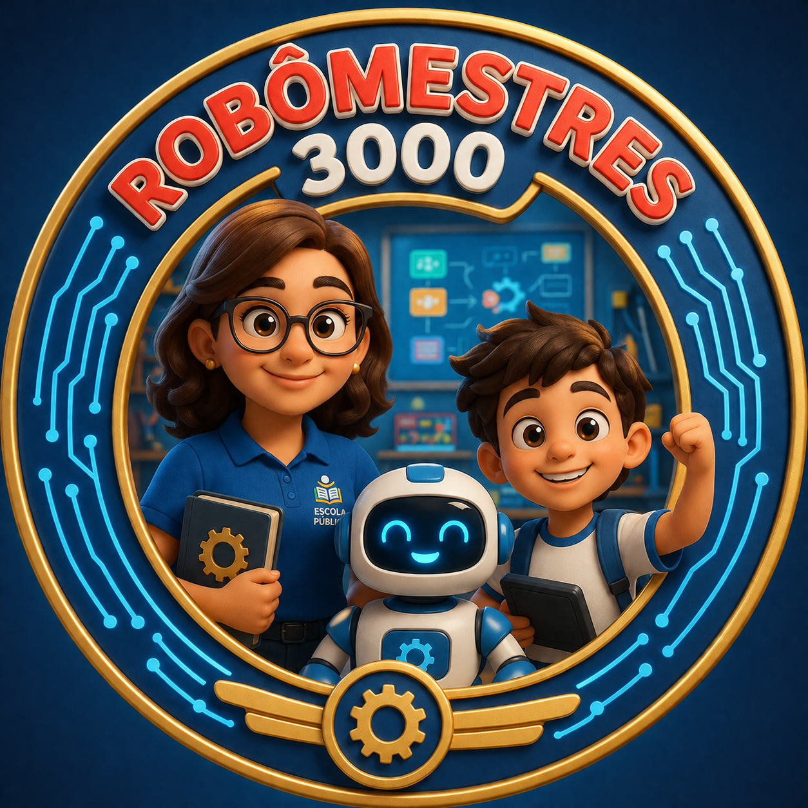

projetosgn
IDEIAS • CÓDIGO • SOLUÇÕES
const resposta = transformar(ideias, código, resultado);
Cartilha Pedagógica
🎓 1º ao 5º Ano · Pensamento Criativo
Introdução ao Scratch para Professores da Educação Básica (1º ao 5º Ano)
Material didático interativo e acessível.
🔗 Acessar projeto
Material didático interativo e acessível.
Cartilha Pedagógica
🧠 6º ao 9º Ano · Pensamento Computacional
Uma sequência didática para desenvolver o Pensamento Computacional do 6º ao 9º ano
Estratégias práticas com Scratch.
🔗 Acessar projeto
Estratégias práticas com Scratch.
Cartilha Pedagógica
💣 1º ao 3º Ano · Cultura Digital
Manifesto para o Ensino Médio, que ensina programação web (HTML, CSS, JavaScript, Python)
integrada
a uma crítica profunda da cultura digital, do capitalismo de vigilância e da cidadania
digital.
🔗 Acessar projeto

Cartilha Pedagógica
🎓 1º ao 5º Ano · Despertar da robótica
Introdução a robótica para Professores da Educação Básica (1º ao 5º Ano)
Material didático interativo e acessível.
🔗 Acessar projeto
Material didático interativo e acessível.
ODS na Escola
🌍 Ensino Médio · Agenda 2030
Projeto interdisciplinar para a rede pública estadual do Paraná
Conectando juventude, cidadania e os Objetivos de Desenvolvimento Sustentável da ONU.
🌐 Acessar ODS na Escola
Conectando juventude, cidadania e os Objetivos de Desenvolvimento Sustentável da ONU.
🤖 Robô Fofoqueiro
🎙️ IA · Acessibilidade · Ensino Médio
Assistente robótico com personalidade excêntrica que traduz sons ambientes em alertas
visuais, textuais e emocionais.
Projeto integrador com Python, Visão Computacional, sensores de áudio e IA generativa com gírias paranaenses.
🤖 Conhecer projeto
Projeto integrador com Python, Visão Computacional, sensores de áudio e IA generativa com gírias paranaenses.
Bio
👤 Institucional · Criadora
Conheça a trajetória, formação acadêmica e filosofia de trabalho
de Gisele Nunes, idealizadora do projetosgn.
👤 Conhecer criadora
de Gisele Nunes, idealizadora do projetosgn.
Novos Horizontes
🚀 Em breve · inovação
Reservado para projetos futuros
Novas soluções, tecnologias emergentes e ideias em evolução.
Novas soluções, tecnologias emergentes e ideias em evolução.